3. Traducció de peces¶
En aquest tutorial aprendrem a moure peces senzilles per compondre altres més complexes.
; BR |
Obrim l’aplicació ** Freecad ** i fem clic a la icona per crear un document ** nou ** | Icon-new-Document |.
Una nova pestanya s’obrirà amb un document buit, on podem començar a dissenyar.
; BR |
Seleccionem la part del banc de treball ** ** per començar a dissenyar objectes en tres dimensions.
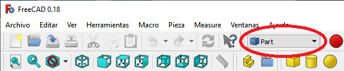
; BR |
En aquest moment afegirem els eixos de referència ** ** per ajudar -nos a situar les peces correctament.
A la `` vegeu ... activeu o desactiveu la creu dels eixos.
En anglès `Veure ... commutar l'eix creu '' '
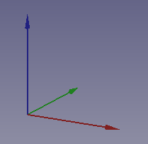
; BR |
Ara ** Creem un cub ** fent clic a la primera icona de la barra d'objectes sòlids.
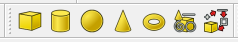
Seleccionem per veure la peça a la vista isomètrica.
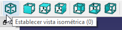
La peça es veurà com a la imatge següent.
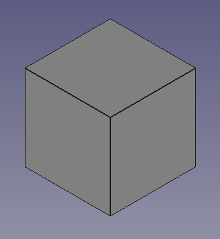
; BR |
Seleccionem el cub i a la pestanya ** Data ** Obrim el menú ** Placement ** i dins del menú ** Posició **.
En aquest menú podem modificar les posicions del cub dels eixos x, y, z.
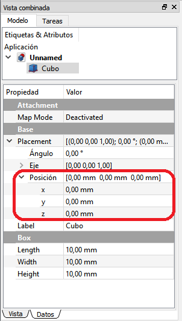
Les posicions x, y, z es poden canviar escrivint un número nou o fent clic al número i girant la roda ** del ratolí **.
En moure la roda del ratolí, la galleda es mou a la pantalla a la seva nova posició.
Exercicis¶
Obriu Freecad i creeu un nou document amb tres cubs col·locats segons la figura següent.
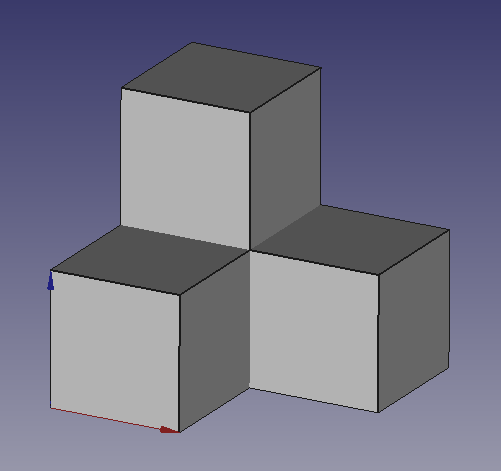
Recordeu que cal seleccionar un cub abans de poder transferir -lo a la pantalla.
Recordeu que les coordenades han de ser ** múltiples de 10 ** de manera que els cubs s’uneixen entre si sense espais entre ells i sense solapaments.
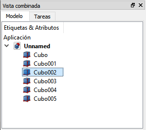
; BR |
Obriu Freecad i creeu un nou document amb cinc cubs col·locats segons la xifra següent.
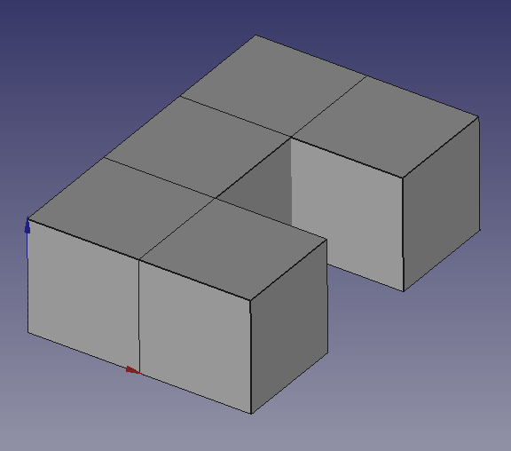
; BR |
Obriu Freecad i creeu un nou document amb diversos cubs col·locats segons la figura següent.
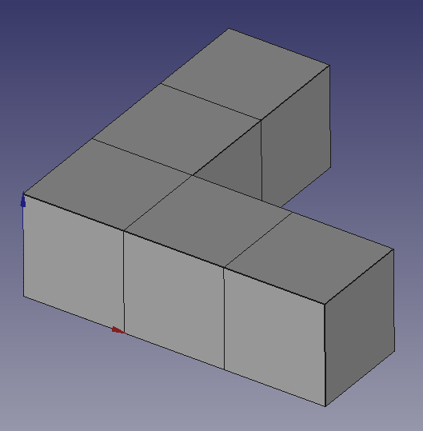
; BR |
Obriu Freecad i creeu un nou document amb diversos cubs col·locats segons la figura següent.
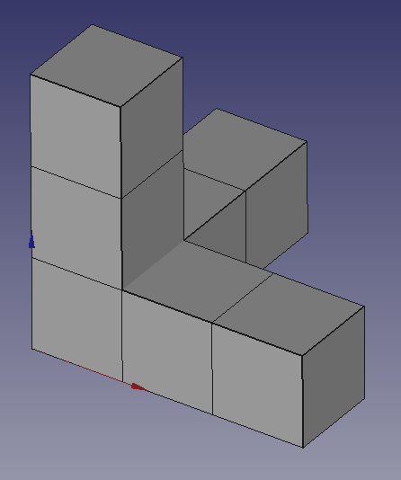
; BR |
Obriu Freecad i creeu un nou document amb diversos cubs col·locats segons la figura següent.
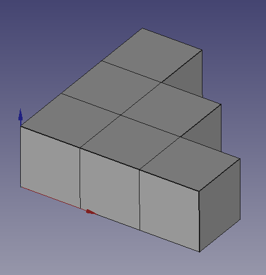
; BR |
Obriu Freecad i creeu un nou document amb diversos cubs col·locats per formar el logotip de tensorFlow, segons la xifra següent.
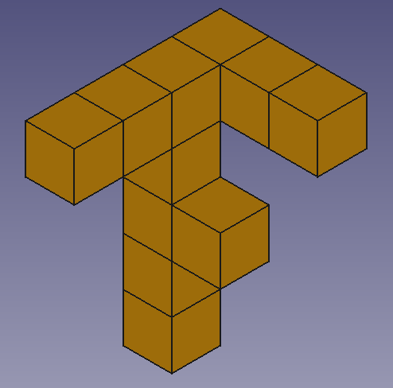
Al final, seleccioneu tots els cubs i canvieu el color de les seves cares (color de forma) per a la taronja.
; BR |
Videotuitorial¶
Vídeo: `Moving Cubes. <https://www.youtube-nocokie.com/embed/mh8cc7f_r4k> `__